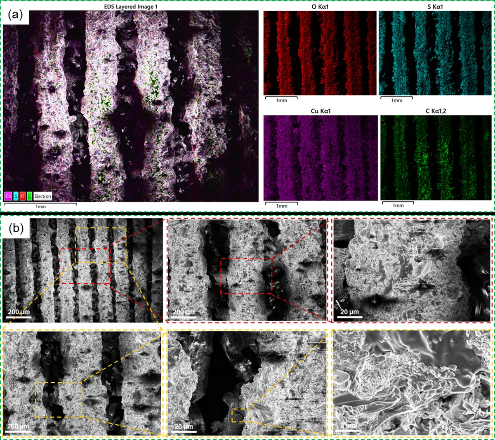

Electrically assisted metal–polymer printing
- Tuned resin compositions (0–3% PEDOT:PSS) and curing parameters over 10 iterative cycles to improve conductivity.
- Studied copper deposition on conductive printed films at 50–100 V for flexible electronics applications.
- Simulated nine designs in COMSOL Multiphysics and tested tensile strength and conductivity.
- Published follow-up work in the ASME Journal of Micro and Nano Science and Engineering (2025).